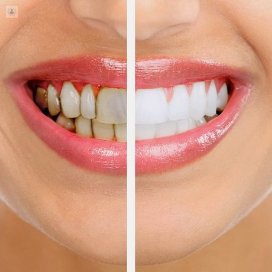
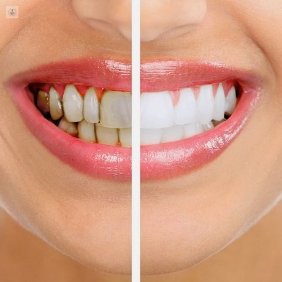

Realizamos radiografías utilizando tecnología digital. Estas imágenes pasan a través de una computadora. La cantidad de radiación transmitida durante el procedimiento es menor que con los métodos tradicionales. Otros tipos de radiografías dentales pueden crear una imagen tridimensional de la mandíbula. Las tomografías computarizadas de haz cónico (CBCT, por sus siglas en inglés) se pueden emplear antes de una cirugía dental, especialmente cuando se colocarán implantes múltiples.
Las prótesis dentales ofrecen una solución muy cómoda y efectiva para millones de pacientes anualmente en todo el mundo. Pero cada persona, por sus características físicas y fisiológicas, requiere de una solución específica y personalizada
Las lesiones periodontales se producen por la acumulación de bacterias, que ocasionan alteraciones del periodonto. Si no son tratadas, estas dolencias avanzan progresivamente, pudiendo provocar la caída de los dientes y diversas afecciones en nuestro organismo.
Un tratamiento de exodoncia conlleva la extracción dentaria de una o más piezas dentales
Extirpar un diente que es irrecuperable desde el punto de vista odontológico, o es perjudicial para la salud del aparato masticador.
.jpeg)
.jpeg) 
